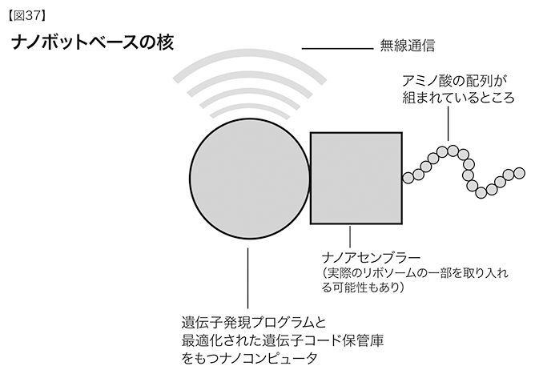

無限に小さいものの役割は無限に大きい。
──ルイ・パストゥール
しかし、わたしは怖いもの知らずにこんなことさえ考える。はるか未来では、原子を好きなように並べ替えられるだろうか。とことん突きつめていった原子そのものを。
──リチャード・ファインマン
ナノテクノロジーによって人間の能力は強化され、物質、水、エネルギー、食糧の継続的開発が実現し、未知のバクテリアとウィルスから身を守れるようになり、さらには（地球全体が豊かになって）平和を乱す要因さえなくなるかもしれない。
──全米科学財団ナノテクノロジー報告書
ナノテクノロジーは、やがて物理世界──われわれの身体や脳も含めて──を再構成する手段となるだろう。それは分子断片の単位から始まり、いずれは原子単位での再構成も可能となるはずだ。収穫加速の法則に従って、さまざまな技術の主要製品の寸法は指数関数的に縮小しつつあり、一〇年で一辺が約四分の一になっている計算だ061。このペースでいくと、主要電子機器の大半と、機械技術の多くは、二〇二〇年代にはナノテクノロジー──通常、一〇〇ナノメートル未満のものが該当する──の範疇に収まるようになる（電子機器はすでにその領域に入っているが、三次元の構造物はまだそうなっておらず、自己集合化もできていない）。それと並行して、ナノテクノロジー時代の到来に備えて、概念の枠組みと設計のアイデアが特にここ数年で急速に発展した。
前述のバイオテクノロジー革命と同じく、気をつけなければならないのは、手段が完全に整ったとしても、生物そのものに限界があるということだ。生物システムはひじょうに巧妙にできているが、最高の状態にはほど遠いことがこれまでにわかってきた。先に述べたように、脳内で進むコミュニケーションはきわめて遅い。そしてあとで触れるつもりだが、赤血球は、ロボット式のものに交換すれば、何千倍も効率よく機能するはずなのだ062。われわれが生物の作用原理を完全に理解したあとで可能となる工学的産物に、生物はけっしてかなわない。
それでもナノテクノロジー革命は人間の身体と脳と、われわれが相互作用している世界を最終的には分子レベルで再設計・再構成できるようになるだろう063。この二つの革命は同時進行しているが、ナノテクノロジーの十全な実現は、バイオテクノロジー革命に一〇年ほど遅れている。
ナノテクノロジーの歴史を語る人の大半は、その概念が誕生したのは、一九五九年に物理学者リチャード・ファインマンが将来を予見して「底には大きな場所がある」と題した講演を行ったときだと見なしている。この講演で、ファインマンは原子レベルの機械がいずれ実現し、多大な影響を及ぼすと述べた。
物理学の原則は、わたしが知る限り、原子単位で操作する可能性を否定しない。原理的には、物理学者は化学者がその化学式を書き出す物質ならなんでも合成できるだろう……。だがどうやって？ 化学者が指示するとおりに原子を配置すればいいのだ。自分たちがしていることを理解する能力と原子レベルでものごとを行う能力が頂点を極めれば、化学と生物学の問題は解決に向かっておおいに前進できる。いずれ必ずそうなると思う064。
じつはファインマンに先駆けて、情報理論家のジョン・フォン・ノイマンが一九五〇年代にナノテクノロジーの基礎概念のひとつを築いている。万能コンピュータと併用した万能コンストラクタ（組み立て装置）をベースとする自己複製システムのモデルを提示したのだ065。それは、コンピュータがコンストラクタに指示を送るプログラムを動かすと、コンストラクタがコンピュータ（自己複製プログラムを含む）と自分の複製を作りだすというものだった。ここまでの段階では、彼の説明はかなり抽象的だ。コンピュータもコンストラクタも、さまざまな種類と素材のものがあるし、理論上の数学的構造にすぎないのかもしれない。しかし、彼はその概念をもう一歩進めて、「運動学的コンストラクタ」を提案した。マニピュレータ（アーム）が一本以上ついていて、「部品の海」の中で自分の複製を組み立てられるロボットだ066。
現代のナノテクノロジー分野が出現するのはさらにあとで、一九八〇年代半ばにエリック・ドレクスラーが発表した歴史的な博士論文の草稿がその礎となった。その論文は、基本的にはすでに存在していた二つの画期的なアイデアを合わせたものだ。つまり、フォン・ノイマンの「運動学的コンストラクタ」が用いる「部品の海」を、ファインマンが提唱した「原子と分子のかけら」で満たしたのだ。ドレクスラーの構想はいくつもの異なる分野にまたがり、また、あまりにも壮大なスケールのものだったので、誰もその論文の指導教官を引き受けようとしなかったが、わたしの恩師、マーヴィン・ミンスキーは唯一の例外となった。ドレクスラーの博士論文はナノテクノロジーの基礎を固め、それが提示したロードマップは、今日でも指標となっている（その博士論文は一九八六年に『創造する機械』という著作になり、さらにくわしい内容が一九九二年の著作『ナノシステム（Nanosystems）』で説明された067）。
ドレクスラーの「分子アセンブラー」は、世界中のほとんどなんでも作れるようになるだろう。かつては「万能アセンブラー」と呼ばれていたが、ドレクスラーや他のナノテクノロジー研究者は「万能」という表現を使わない。このようなシステムによる生産は、物理と化学の法則に従わざるをえないので、ほとんどなんでもとは言っても、原子的に安定した構造しか作れないからだ。さらに、どのアセンブラーも原子をなんでも使えるとされているものの、実際には自分用の部品の海からしか製品を作れない。とはいえ、こうしたアセンブラーは、高効率のコンピュータや他のアセンブラー向けのサブシステムなど、われわれが望む物理的装置はほぼ全て製造できる。
ドレクスラーはアセンブラーの詳細な設計は示さなかったが──そのような設計は今も提示されていない──彼の論文がきっかけとなって、分子アセンブラーの基本的要素ひとつひとつの実現性が広く議論されるようになった。次にあげるサブシステムがその例だ。
・コンピュータ 組み立てを制御する知性を提供するもの。アセンブラーのあらゆるサブシステム同様、コンピュータは小型でシンプルでなくてはならない。第三章で述べたように、ドレクスラーはトランジスタゲートではなく、分子「ロック」をもつ興味深い機械式コンピュータの概念を提示している。それぞれのロックは、わずか一六立方ナノメートルの大きさで、一秒間に一〇〇億回も切り換えを行う。この案は現存するどんな電子技術よりも説得力がある。とはいえ、三次元に並んだカーボンナノチューブで作られた電子コンピュータのほうが、より高いコンピューティング密度（つまり、一グラムあたりの一秒間の計算量）を実現できそうだ068。
・命令体系 ドレクスラーと同僚のラルフ・マークルは、ＳＩＭＤ（単一命令マルチデータ）の構造を提案した。その構造では、単一のデータ記憶装置が命令を記録する一方で、その命令を何兆もの分子サイズのアセンブラー（それぞれ簡単な自分のコンピュータをもつ）に転送する。ＳＩＭＤの制約については第三章で述べたが、万能ナノアセンブラーのコンピュータには、その設計で十分だ（ＭＩＭＤ［複数命令マルチデータ］のほうが柔軟だが、実現しやすいのはこちらだ）。この方式なら、欲しい製品を作るために各アセンブラーがプログラム全体を保存しなくても済む。中央の一点から拡散するこの「ブロードキャスト」構造は、安全性という重要な問題にも対応する。もしも手に負えない事態に陥ったら、命令を出している中央の発信源をストップさせて自己複製プロセスを遮断できるからだ。
しかしドレクスラーは、ナノアセンブラーは必ずしも自己複製するとは限らない、と指摘する069。それでも、本来、自己複製の暴走というリスクがつきまとうため、フォアサイト研究所（エリック・ドレクスラーとその妻クリスティン・ピーターソンが設立したシンクタンク）が提案した倫理規範には、特に自然環境での無制限の自己複製の禁止が含まれている。
第八章でくわしく述べるが、この方式は不慮の危険にたいしてはそれなりの効果があるとしても、攻撃する意思と知的能力をもつ敵には出し抜かれる危険性がある。
・命令伝達 中央データ集積部から各アセンブラーへの命令は、電子コンピュータなら電子的に、もしくはドレクスラーが言うところの機械式コンピュータなら機械的振動によって伝達される。
・組み立てロボット コンストラクタはアームが一本のシンプルな分子ロボットだ。フォン・ノイマンの運動学的コンストラクタと似ているが、こちらはひじょうに小さい。後述のように、モーターやロボットの脚として作動しうる分子サイズのシステムは実験レベルではすでに存在する。
・ロボットアーム・チップ ドレクスラーの著書『ナノシステム』は、ロボットアームの先が（適切な原子間力の場によって）分子の断片や、さらには原子一個をつかみ、希望する場所に置けるようにする化学的作用のアイデアをいくつも提示している。人工ダイヤモンド製造に用いる化学気相成長法では、分子断片だけでなく個々の炭素原子がアーム・チップの化学反応によって動かされる。人工ダイヤモンドを作る過程は何兆という原子が動く無秩序なものだが、ロバート・フレイタスとラルフ・マークルが思い描くロボットアーム・チップは、原料となる物質から水素原子を取り出し、希望の位置に置いて分子マシンを組み立てていくものだ。その案では、小型マシンはダイヤモンドイド（ダイヤモンド状物質）からできている。この物質は強度が優れているだけでなく、トランジスタ製造過程で半導体の通電性を高めるのとまったく同じ要領で、不純物を添加できる。シミュレーションにより、そのような分子サイズのギア、レバー、モーターをはじめとする機械システムは、予想通り正常に作用するとわかった070。最近、注目されているのはカーボンナノチューブだ。それは六角形に並んだ炭素原子のシートが三次元に丸められたもので、分子レベルで機械的にも電子的にも機能できる。すでに組み立てられた分子マシンの例をあとで紹介しよう。
・アセンブラーの内部環境 繊細な組み立てプロセスが妨げられないように、周囲の不純物から保護されなければならない。ドレクスラーは、アセンブラー自身が作るダイヤモンドイドでその壁を築き、真空に近い状態を維持することを提唱している。
・組み立てに必要なエネルギー 電気、もしくは化学エネルギーによって供給できる。ドレクスラーは、アセンブラーの周囲を液体で満たし、組み立てるものの原料と燃料をそこに溶かし込む方式を提案した。最近では、水素と酸素か、ブドウ糖と酸素によるナノ燃料電池や、超音波の音響エネルギーなどが提案されている071。
さまざまな形態が提案されてきたものの、典型的なアセンブラーは、コンピュータ、服、美術品、はては料理まで、ソフトウェアがある製品なら、ほぼなんでも作れる卓上の機械一式として説明されてきた072。家具、自動車、さらには家といった大型製品は、ユニット式に組み立てるか、大型のアセンブラーによって作ることができる。とりわけ重要なのは、設計上、（危険な自己複製を避けるために）特別に禁止されていない限り、アセンブラーは自分の複製が作れるという事実だ。アセンブラーそのものを含めた物理的な製品を製造するのに必要なコストは、一ポンド（約四五〇グラム）あたり数セント、基本的には原材料費だけだ。ドレクスラーは、分子製造プロセスのコストの総額は、製造品が服であれ、超並列処理のスーパーコンピュータであれ、あるいは製造システムの増強であれ、一キログラムあたり四セントから二〇セントだと試算する073。
もちろん、現実のコストは、それぞれの製品を説明する情報に支払う金額、つまり組み立てを制御するソフトウェアの価値である。すなわち、物質的なものを含め、世界に存在するあらゆるものの価値は、基本的に情報に基づくようになる。これは今日の状況とそれほどかけ離れているわけでもない。実際に、製品価値に情報が占める割合は急速に増加し、一〇〇パーセントに限りなく近づきつつある。
分子マニュファクチャリング・システムを制御するソフトウェアの設計は、現在のチップ設計とほぼ同じように、それ自体が高度に自動化される。チップを設計する人は無数にある線や部品の位置をいちいち決めているわけではなく、特定の機能や特徴を指定しているだけだ。それをコンピュータ支援設計（ＣＡＤ）システムが読み取り、実際のチップ上の配置を決める。同じように、ＣＡＤシステムが、精密な設計書から分子マニュファクチャリング・システムの制御ソフトウェアを生産する。そのＣＡＤシステムには、製品内部を三次元で探査し、その性能全ての複製に必要なソフトウェアを生産するという、製品のリバースエンジニアリング機能も含まれる。
作動段階では、中央データ集積部がアセンブラーの何兆という（10の18乗と試算する人もいる）ロボットに一斉に命令を送り、個々のロボットは同一の指令を同時に受け取る。最初はアセンブラーがこの分子ロボットを製造する。当初はその数も少ないが、製造されたロボットがさらにロボットを作るという繰り返しで数が増え、最終的に必要な数のロボットが揃う。各ロボットは、組み立てるメカニズムに応じたローカルデータを保存している。この保存されたデータが使われるときには、中央データ集積部から送られる全体指示は遮断されて届かなくなり、ローカルパラメータがその穴を埋める。この方法だと、全てのアセンブラーが同じ一連の指示を受け取っていたとしても、各分子ロボットによって組み立てられるものは、ある程度、カスタマイズされたものになっている。このプロセスは生物における遺伝子の発現に似ている。どの細胞も全ての遺伝子をもっているが、それぞれの細胞に関係する遺伝子だけが発現するようになっているのだ。個々のロボットは、原料物質から原料および必要な燃料を取り出す。その中には、炭素原子や分子断片も含まれる。
生物を利用したアセンブラー
自然を見れば、分子の集合体が機械となりうることがわかる。あらゆる生物はそのような仕組みによって動いている。たとえば酵素は、他の分子同士を結びつける絆を作り、壊し、ふたたび配列する分子マシンだ。筋肉は繊維をずらして引っ張る分子マシンによって動かされている。ＤＮＡはデータ集積システムで、デジタル指令を分子マシンのリボソームに伝送し、リボソームはタンパク質分子を生成する。その結果、タンパク質分子が分子マシン集合体としての生命体の大半を占めるようになる。
──エリック・ドレクスラー
将来の分子アセンブラー実現を約束する究極の存在は、生命そのものだ。実際のところ、生命活動における情報基盤の理解が深まるにつれて、一般的な分子アセンブラーの設計に応用できる具体的なアイデアが次々に登場している。たとえばそのエネルギー源として、生物細胞でも使われているブドウ糖とアデノシン三燐酸（ＡＴＰ）の利用が提案されている。
生物がドレクスラー式アセンブラーの設計上の難問をどのように解決するか、考えてみよう。生物ではリボソームがコンピュータと組み立てロボットの両方の役目を果たしている。だが、生命は中央データ集積部をもたず、すべての細胞にコード全体を預けている。一方、ナノ操作されたロボットは、（「ブロードキャスト」構造を利用して）ローカルデータをアセンブリーコードのごく一部に限定できる。このことこそ、特に自己複製において、ナノテクノロジーが生物より安全に操作できることを保証する最大の特徴だ。
生命体のローカルデータ集積部はもちろんＤＮＡであり、染色体上に並んだ特定の遺伝子である。指示の阻止（特定の種類の細胞生成に寄与しない遺伝子の働きを抑制する）は、遺伝子発現を支配する短いＲＮＡ分子とペプチドによって行われる。リボソームは、細胞内で維持される特別な化学的環境にあって初めて機能できる。そこでは酸とアルカリの特定のバランス（人間の細胞だとｐＨ七前後）や、他の化学的バランスが保たれている。細胞膜はこの内部環境を守る役割を果たしている。
細胞核をナノコンピュータとナノボットでアップグレードする ここにプリオン（自己複製する異常タンパク質）以外のあらゆる生物病原体を克服するための簡単なアイデアがある。二〇二〇年代にナノテクノロジーが本格的に動きだすと、細胞核にある生物の遺伝情報の保管庫を、ナノ操作されたシステムに交換できるようになるかもしれない。このシステムは、遺伝コードを維持し、ＲＮＡやリボソームといった、生物を組み立てるコンピュータの構成要素の活動を模倣する。ナノコンピュータは遺伝コードを維持し、遺伝子発現のアルゴリズム（操作手順）を実行する。そしてナノボットは、発現した遺伝子に応じてアミノ酸を配列する。

このメカニズムを採用するメリットは大きい。老化の一大原因であるＤＮＡエラーの蓄積を防ぐことができるし、ＤＮＡを変化させて遺伝子を根本的にプログラムし直すこともできる（遺伝子療法を用いれば、このシナリオが実現するかなり前に可能になっているだろう）。望ましくない遺伝情報の複製を阻止して、生物病原体（バクテリア、ウィルス、癌細胞）を撲滅することも可能だ。
ナノ操作されたこのシステムがあれば、例のブロードキャスト構造が望ましくない複製行為を遮断するので、癌や自己免疫反応や、その他の疾病の進行を阻止できる。疾病の大半は前項で説明したバイオテクノロジーによってすでに克服されているが、ナノテクノロジーを用いて生命体のコンピュータを再設計すれば、未解決の障害をどれも打ち負かし、生物本来の限界を超えた耐久性と柔軟性を獲得できるだろう。
ロボットアーム・チップは、リボソームの能力を利用して酵素反応を起こし、特定のｔＲＮＡとつながっているアミノ酸をひとつひとつ分断し、それをペプチド結合によって隣接するアミノ酸につなげる。つまりこのシステムは、必要なアミノ酸の鎖を作りだせる生物マシン、リボソームそのものを活用できるのだ。
しかし、分子を作りだすこのシステムが目指しているのは、単に生物の分子アセンブリー能力の模倣ではない。生物システムは、タンパク質から作られているという限界があり、強度と速度の面で大きく制約される。タンパク質は三次元になっているものの、生物は本質的に一次元の存在であるアミノ酸の鎖を折りたたんでできる種類の化学物質に限定される。一方、ダイヤモンド質の歯車とローター（回転子）から作られたナノボットは、生物の細胞より何千倍も速くて強い。
コンピューティング能力について言えば、その差はさらに劇的に広がる。ナノチューブのコンピューティングの切り換えスピードは、哺乳類のニューロン間結合に用いられる極度に遅い電気化学的切り換えの数百万倍の速さだ。
前述したダイヤモンド質アセンブラーが、概念上（組み立てにもエネルギー源にも）ずっと同じ材料を使うのは、その手の届かない世界で分子ベースのロボット複製がコントロールできなくなるのを防ぐ手段のひとつだ。生物の身体製造ロボットであるリボソームも、ひじょうに限られた原料物質とエネルギー源を必要とし、それらはわれわれの消化器官から提供される。しかし、ナノテクノロジーの製造ロボットはもっと精巧で、それほど制限を受けない原料物質から炭素原子と炭素ベースの分子断片を取り出すことができ、しかも生物界と違って制御された環境でなくても作動できるため、生物にとって重大な脅威になりうる。とりわけナノベースの製造ロボットの力と速度があらゆる生物システムをはるかにしのぐことを思えば、その脅威は現実味を帯びてくる。この能力は、当然、激しい論争を引き起こしている。くわしくは第八章で語る。
ドレクスラーの『ナノシステム』が刊行されてからの一〇年間で、彼が思い描いた設計の各局面は、追加の設計案074、スーパーコンピュータによるシミュレーション、そしてなにより、関連する分子マシンの実際の組み立てによって正当性が証明された。ボストン・カレッジの化学教授であるＴ・ロス・ケリーは、化学的な力で動くナノモーターを七八個の原子から組み立てたと発表した075。カルロ・モンテマーニョ率いる生物分子研究チームは、ＡＴＰを燃料とするナノモーターを開発した076。太陽エネルギーを動力とする分子サイズのモーターも、オランダ・フローニンゲン大学のベン・フェリンガによって五八個の原子から作りだされた077。ギア、ローター、レバーといった他の分子サイズの機械部品にも同様の進歩が見られる。化学エネルギーと音響エネルギー（ドレクスラーが最初に提唱した）を利用するシステムが設計され、シミュレートされ、実際に組み立てられた。分子サイズの装置からさまざまな電子部品を考案する研究もかなり進んでいる。リチャード・スモーリー〔一九九六年ノーベル化学賞受賞〕が先駆者となったカーボンナノチューブ分野で特に顕著だ。
ナノチューブは、構成部品としてもじつにさまざまな用途が期待できる。近年、ナノチューブでベルトコンベヤーを作れることが、ローレンス・バークレー国立研究所の研究者によって実証された078。このナノサイズのベルトコンベヤーは、小さなインジウム粒子を輸送するためのものだが、他にもいろいろな分子サイズの物質の輸送に利用できる。ベルトに流れる電流を制御して、動く向きと速さを調整できる。「ノブを回すように簡単に……ナノスケールの大量の物質移動をマクロスケールからコントロールできる」と、設計者のひとり、クリス・リーガンは語る。「それに、これは逆向きにも動かせる。電流の向きを変えれば、インジウムをもとの場所に戻せるのだ」分子サイズの組み立てブロックを高速で行き来させて狙い通りの場所に置けるようになれば、分子アセンブリー・ラインの構築に大きく一歩、近づける。
軍事関連大手のゼネラルダイナミクス社〔当時〕がＮＡＳＡ向けに行った研究は、自己複製するナノマシンの実現の可能性を示した079。研究者はコンピュータでシミュレーションを行い、再構成可能な分子モジュールで組み立てられ、運動学的セル・オートマトンと呼ばれる分子レベルで正確に動くロボットが、自己複製できることを示したのだ。またこの設計がブロードキャスト構造を採用していることは、より安全な自己複製の実現性を裏づけている。
ＤＮＡは、分子構造物を組み立てるうえでナノチューブに劣らず汎用性があることが証明されつつある。自分自身と結合するその性質ゆえに、ＤＮＡは構成部品として有用であり、将来の設計にはその性質と情報保存能力が取り入れられるだろう。ナノチューブもＤＮＡも、情報保存と論理制御、そして三次元構造の組み立てに用いる素材として、きわめて優れた性質を有している。
ミュンヘンのルートヴィッヒ・マクシミリアン大学の研究チームは、命令に応じて複数のタンパク質からひとつ選び、それを結合したり離したりできる「ＤＮＡの手」を組み立てた080。また、リボソームとよく似たＤＮＡアセンブラーのメカニズムを作りだす際に重要なステップが、シーピン・リャオとネイドリアン・シーマンというナノテクノロジー研究者によって明らかにされた081。それは分子をつかんで離す能力とそのコントロールで、分子ナノテクノロジーによる組み立ての実現には不可欠な、もうひとつの重要な要素だ。
スクリプス研究所の科学者は、自己相補的な領域を正確に配置した一六六九のヌクレオチドからなるＤＮＡ鎖の複製を数多く生成し、ＤＮＡのブロックが作れることを実証した082。鎖は自発的にみずからを組み立ててしっかりした八面体になった。それは精緻な三次元構造体の構成要素として用いうるものだ。このプロセスを応用して、その八面体をタンパク質運搬の入れ物にすることもできる。スクリプス研究所の研究者のひとり、ジェラルド・Ｆ・ジョイスはこれを「反転ウィルス」と呼ぶ。ウィルスそのものも自己集合化する存在だが、ふつうは内側にＤＮＡ（もしくはＲＮＡ）をもち、外殻はタンパク質でできている。「この仕組みなら、ＤＮＡを外側に、タンパク質を内側にすることも原理的には可能だ」とジョイスは語る。
ＤＮＡから作られたナノスケールの装置がいくつも開発されているが、とりわけ印象的なのは、長さ一〇ナノメートルの二本足で歩く小型ロボットだ083。両足も歩行トラックもＤＮＡでできている。ＤＮＡ分子を採用したのはコントロールしながらくっつけたり離したりできるからだ。ニューヨーク大学の化学教授ネイドリアン・シーマンとウィリアム・シャーマンが製作したこのナノロボットは、トラックからいったん足を離し、トラックを動かして足を戻すという方法で歩く。このプロジェクトも、ナノマシンが正確に動くことをみごとに実証した。
ナノボットを設計するには、自然から学ぶという手もある。オークリッジ国立研究所のナノテクノロジー研究者、マイケル・シンプソンは、「できあいの機械」としてバクテリアが利用できると考える。バクテリアは自然が生んだナノボット・サイズの生物で、動いたり、泳いだり、液体をくみ上げたりできる084。ハーヴァード大学ローランド研究所の科学者、リンダ・ターナーは、線毛と呼ばれるバクテリアの極細の腕に着目した。この部位は、ナノスケールの物体を運んだり液体を混ぜ合わせたりするなど、さまざまな作業ができる。もうひとつの方法はバクテリアの体の一部だけを使うものだ。ワシントン大学のヴィオラ・ヴォーゲル率いる研究チームが組み立てた大腸菌の肢だけを使ったシステムは、大きさが異なるナノスケールの球を選別できた。バクテリアは、幅広い機能をもつ自然のナノシステムであり、したがってこれらの研究の最終的な目標は、バクテリアの機能のリバースエンジニアリングを行い、その原理をナノボットの設計に応用するところにある。
太く、べたつく指
未来に向けてナノテクノロジー・システムの各側面は急速に発展し拡大しているが、ドレクスラーのナノアセンブラーの概念に関して、今のところ致命的な欠陥は見つかっていない。二〇〇一年に「サイエンティフィック・アメリカン」誌に大々的に掲載されたノーベル賞受賞者のリチャード・スモーリーによる批判は、ドレクスラーの考えを歪んで解釈したものだった085。しかもスモーリーはそれまでの一〇年間に行われた一連の広範な研究を無視していた。彼はカーボンナノチューブ分野の先駆けとして、ナノテクノロジーのさまざまな用途を熱心に提唱し、「エネルギー、健康、通信、輸送、食料、水に関して、差し迫った物質的欠乏の解決策があるとすれば、それはナノテクノロジーによるものだ」と書いているが、分子ナノテクノロジー・アセンブリーについては依然として懐疑的だ。
スモーリーは、ドレクスラーのアセンブラーには五本から一〇本の「指」（操作アーム）があり、それで原子をつかんだり動かしたり置いたりしてその機械を組み立てる、と述べ、そこから問題の核心へと進む。分子アセンブリーのナノボットが作動する狭い空間に、それだけの指が入る余地はないし（「太い指」問題）、分子には引っぱり合う力があるので原子の荷物をその指から離させるのは難しい（「べたつく指」問題）、と言うのだ。彼はまた、典型的な化学反応では、五個から一五個の原子による「込み入った三次元のワルツが……展開されている」ことを引き合いに出す。
だが、実際のところ、スモーリーが言うように、ドレクスラーの考えるモデルが空論だとはとても思えない。第一に、ドレクスラーのモデルと、それに続く研究の大半において、「指」は一本しか使わない。さらに、実現しうるチップの化学的性質については徹底的に説明と分析が行われているが、それらは機械の部品をしかるべき場所に置くように原子をつかんだり置いたりするものではない。前述した例（たとえばＤＮＡの手）に加え、すでに一〇年の間に、ドレクスラーの「プロピニル製の水素抽出」チップを使えば水素原子を移動できることがはっきりと確認されている086。一九八一年にＩＢＭが開発した走査型プローブ顕微鏡（ＳＰＭ）と、さらに高性能な原子間力顕微鏡（ＡＦＭ）は、分子サイズの構造をもつ探針の特別な反応を通じて個々の原子の位置を特定でき、その能力はドレクスラー・モデルの正当性を裏づけるさらなる根拠となっている。近年、大阪大学の研究者が電気技術ではなく機械技術を用いながら、ＡＦＭで非導電性の原子を個別に移動させた087。導電性の原子・分子だけでなく非導電性のものも移動させる能力が、今後の分子ナノテクノロジーには必要となるだろう088。
スモーリーの批判が正当なら、誰ひとり、こうしてこの問題を議論したりはしないだろう。生命体そのものが存在しえないことになるからだ。われわれ生物のアセンブラーが行っているのは、まさにスモーリーが不可能だと言っていることなのだ。
またスモーリーは、「懸命に作業した」ところで、「……ある製品をごく少量作るにしても、（ナノボットでは）……果てしない年月がかかるだろう」と否定的だ。確かに、わずか一体のナノボットで作れるものの数はたかが知れている。だが、ナノテクノロジーのアイデアのベースとなっているのは、何兆というナノボットを使って一定の成果をあげようというものだ。だからこそ、安全性の問題に高い関心が寄せられているのだ。ただ、低コストでこれだけ多くのナノボットを作るには、いずれかの段階で自己複製が不可欠となり、それによって経済的問題は解決されるが、かなり深刻なリスクも引き起こす。この問題については第八章で検討する。生物も同じ方法によって何兆という細胞からなる体を創造しており、病気のほとんど全ては生物の自己複製の失敗から生じているのである。
かつてナノテクノロジーを支える概念に向けられた批判にも、納得できる答えが提出されている。批判する側は、ナノボットは原子核、原子、分子の熱振動の絶え間ない攻撃にさらされると指摘した。ナノテクノロジーの概念を築いた人々が、ダイヤモンドイドやカーボンナノチューブで構成部品を組み立てることを強く求めた理由はそこにある。システムの強度や硬さを向上させれば、熱に弱いという欠点をカバーできるからだ。分析の結果、そうやって作られた製品は生物の何千倍も熱に強いことが判明しており、ひじょうに広範囲の温度で作動可能である089。
ナノサイズの装置はとんでもなく小さいため、量子効果のせいで位置が定まらないのではないかという疑問もあった。量子効果は電子への影響は大きいが、炭素原子の核一個の大きさは電子の二万倍以上だ。ナノボットは一〇〇万個から一〇億個単位の炭素原子や他の原子でできているので、電子と比べると最大で一兆倍の大きさになる。この比率を量子位置の不確定性を示す基本方程式（不確定性原理の式）に当てはめると、そうした影響は取るに足らないものだとわかる090。
動力も課題のひとつだった。ブドウ糖と酸素を用いる燃料電池のアイデアは、フレイタスらがその実現性を検討した研究においても高く評価されていた091。ブドウ糖・酸素型の長所は、ナノテクノロジーを医学に応用する際に、人間の消化器官から出てくるブドウ糖、酸素、ＡＴＰ（アデノシン三燐酸）を活用できる点だ。近年、ニッケル製プロペラを利用し、ＡＴＰベースの酵素で動くナノスケールのモーターが製作された092。しかし、ＭＥＭＳ（微小電子機械システム）サイズ、ひいてはナノスケールの、水素・酸素燃料電池の実用化に向けて研究が進むなど、別の方法も可能になっている。それについては後で述べる。
議論白熱
二〇〇三年四月、ドレクスラーはスモーリーが「サイエンティフィック・アメリカン」誌で述べた批判に対し、公開質問状の形で反論した093。彼は、自分や他の人が行った二〇年間にわたる研究を引用し、特に「太くべたつく指の問題」に焦点を絞って反論した。先に述べたように、分子アセンブラーは複数の指をもつと説明されたことなど一度もなく、むしろ反応分子を決められた場所に置く能力に重点を置いていた。ドレクスラーは生物の酵素とリボソームを、自然界の精密な分子アセンブリーの例としてあげ、最後に、スモーリーその人の発言で締めくくった。「科学者がそれは可能だと言うとき、たいていはそれに要する時間を少なく見積もっている。しかし科学者が不可能だと言うときには、間違っていることが多い」
二〇〇三年、議論の応酬はそれから三回続いた。スモーリーはドレクスラーの公開質問状を受けて、太くべたつく指の問題を取り下げた。そのうえでスモーリーは、生物の酵素は水中のみで作用し、そのように水がベースとなる化学作用は「木や肉や骨」といった生物の構造でしか起こりえないと述べた。だが、ドレクスラーが言うように、この批判も間違っている094。多くの酵素は、通常、水中で作用するものでさえ、無水有機溶媒の中でも作用できるし、まったく液体を用いずに気体中で作用するものもある095。
それでもスモーリーはあとに引かず、酵素のような反応を起こすには、生物の酵素が不可欠で、その形態は水を伴う化学反応に限ると（引用も根拠もなく）述べた。これもまた誤りだ。ＭＩＴの化学・生体工学教授であるアレクサンダー・クリバノフが、一九八四年に無水の（水を伴わない）酵素触媒作用を実証した。クリバノフは二〇〇三年にこう述べている。「無水酵素触媒反応に関する（スモーリーの）発言は明らかに誤りだ。現にわれわれの最初の論文が二〇年前に発表されてから、無水酵素触媒反応をテーマにした論文が、数百か、ひょっとすると数千も発表されている096」
生物の進化が水ベースの化学反応を選んだ理由ははっきりしている。水は地球上にふんだんにあり、人間の体や食べ物はもとより、実際のところ全生物の七〇パーセントから九〇パーセントを占める成分となっている。しかも水の三次元の電気特性はひじょうに強く、他の化合物の化学結合をやすやすと切断する。水は「万能溶媒」だと考えられており、人間の体内の生化学的反応経路の大半に関わっているため、この惑星で起きる生命の化学反応は基本的に水中で起きると見なしていい。確かに生物の進化は水ベースの化学反応とタンパク質ベースのシステムに縛られてきたが、われわれの技術を進歩させたのは、この制約とは無縁のシステムの発展だった。生物は空を飛べるが、高度一万メートルを時速数百ないしは数千キロメートルで飛びたいなら、利用するのはタンパク質ではなく現代のテクノロジーだ。人間の脳などの生物システムは、記憶も計算もできるが、数十億もの情報からデータを抽出したいのであれば、頼りない人間の脳ではなく、電子テクノロジーを使うだろう。
分子反応を精密に誘導して分子断片をある場所に置く方法については、さまざまな代替手段が研究されてきたが、スモーリーは一〇年にも及ぶその研究を無視していた。とりわけダイヤモンドイド合成の正確なコントロールについては熱心に研究され、水素化ダイヤモンド表面から水素原子一個を取り出せるかどうか097、ダイヤモンド表面に一個以上の炭素原子を足せるかどうか098について検討された。水素抽出の実現性や、正確に誘導されたダイヤモンドイド合成の実現性を証明するための関連研究は、カリフォルニア工科大学の材料・プロセス・シミュレーション・センター、ノースカロライナ州立大学の材料科学工学科、ケンタッキー大学の分子製造研究所、アメリカ海軍兵学校、ゼロックス・パロアルト研究所などで行われてきた099。
スモーリーはまた、先に述べたＳＰＭ（走査型プローブ顕微鏡）についても言及を避けた。この技術は精密に制御された分子反応によって原子の位置を特定するもので、すでに確立されている。ラルフ・マークルは、このような概念を積み上げていき、最高四個の反応体を伴う先端化学反応の実現性を説く100。正確に誘導でき、分子アセンブラー内の先端化学作用に利用できる、位置特定反応に関する研究報告書は無数にある101。近年、ＳＰＭを上回る機器がいくつも登場し、それらは原子や分子断片を確実に操作できる。
二〇〇三年九月三日、ドレクスラーは自分の最初の公開質問状に対するスモーリーの反論への回答で、スモーリーが無視した文献は数多くあると改めてほのめかした102。ドレクスラーは現代の工場にたとえて、違いはナノスケールで稼動している点だけだ、と述べた。彼はある安定状態から別の安定状態へ遷移するときの遷移状態理論の分析を引用し、位置のコントロールは、適切な反応物質を選べばメガヘルツの周波数で可能になると述べた。
スモーリーはふたたび書面で反論したが、それは具体的な引用や、現行の研究にはほとんど触れず、不正確な比喩を延々と連ねたものだった103。たとえばこんなことを書いている。「少年と少女をただ一緒にいさせるだけで、恋に落ちろと言っても無理なのと同じで、単純な機械的動きだけで二つの分子間に望みどおりの正確な化学反応を起こすことはできない……。二つの分子をくっつけるだけでは無理なのだ」ここでも彼は、酵素は実際にこうした作用をしていると認めながらも、生物システムの外でそのような反応が起きうるとは認めなかった。「だからわたしは……本物の酵素による本物の化学反応について語るように仕向けたのだ。このようなシステムは、どれも液体溶剤が必要だ。わたしたちが知っている酵素の場合、その液体は水でなければならず、水を使って合成できる種類の物質は、生物の肉と骨以外にたくさんあるとは思えない」
スモーリーの論法は「現時点でＸをもっていないのであれば、Ｘは不可能だ」というのと同じだ。この類いの主張は、人工知能（ＡＩ）の分野でおなじみのものだ。批判する側は、現在のシステムの限界を根拠として、そのような限界は本質的なもので、けっして克服できないと言う。一〇年前は研究対象でしかなかったＡＩの機器の多くが、現在では普通に市販されているが、そうした膨大な事例を無視してしまうわけである（「特化型ＡＩの使用例」の節参照）。
根拠の揃った方法論に基づいて未来を予測しようとするわれわれは、そもそも不利な立場にある。将来そうなることは確実でも、現時点ではまだはっきりとした根拠を示せないため、予測は簡単に否定されてしまう。二〇世紀初頭、少数派の思想家たちが空気より重いものが空を飛ぶようになると主張したが、多数を占める懐疑主義者は、もし本当にそうならなぜこれまで実証されなかったのかと、その主張を一蹴した。
スモーリーは、最近の書簡の最後で、その思うところの一端を述べている。
数週間前、ヒューストン地区の大規模学区であるスプリングブランチ学区の中高校生約七〇〇人を前に、「科学者になって世界を救おう」と題して、ナノテクノロジーとエネルギーに関する講演を行った。わたしの訪問に先立ち、生徒たちは「ナノに夢中な理由」というテーマでエッセイを書いてくることになっていた。数百名から提出があり、わたしは三〇の優秀作を読ませてもらってその中からお気に入りの五作を選んだ。わたしが読んだ作文の半数近くが自己複製するナノボットは実現可能だとしており、大半は、将来そのようなナノボットが世界中で増殖したらどうなってしまうのかといたく心配していた。私は講演を通じてできる限りその不安を和らげようとしたが、間違いなくこうした中高生の多くは、ひどく悩ましい話を聞かされて育ってきたのだ。
あなたや、あなたの周囲の人たちが、子どもたちを怯えさせたのだ。
わたしはスモーリーにたいして、以前も批判的な人々は、世界規模の通信ネットワークの実現も、それを通じてのソフトウェア・ウィルスの蔓延も、現実になるとは思ってもいなかったことを指摘したい。今日、それらの実現によって、われわれは恩恵を受けた反面、弱点をさらすことにもなった。しかし、ソフトウェア・ウィルスの危険の高まりにあわせて、技術的な免疫システムも登場した。われわれは、希望と危険が絡み合ったこの最新の事例から、害よりもはるかに大きな益を得ている。
未来のテクノロジーが悪用される危険性を人々に訴えるというスモーリーのやり方は、正しい戦略ではない。ナノテクノロジーベースのアセンブリーの実現性を否定することによって、彼はその将来性をも否定しているのだ。分子アセンブリーがもたらす希望も危険も否定してしまうと、最後にはしっぺ返しを食らい、しかるべき建設的な方向へ研究を進められなくなる。二〇二〇年代には、分子アセンブリーは、貧困の撲滅や、美しい環境の回復、病気の克服、寿命の伸長といった、さまざまな価値ある目標をなしとげるためのツールとなっているだろう。人類が生みだした他のあらゆるテクノロジーの例にもれず、これを悪用して人間の破壊的な面を増幅し表面化させることもできる。リスクを避けつつ、それがもたらすはずの大きな利益が得られるよう正しい知識に基づいてこのテクノロジーを使うことが肝要だ。
初期の導入例
当初ドレクスラーが抱いていたナノテクノロジーの概念は、主に製造過程における正確な分子コントロールを指していたが、やがて、主となる部分がナノメートル単位（通常は一〇〇ナノメートル未満）で測られるテクノロジー全てを含むようになった。現代の電子機器はいつの間にかこの範疇に入ってきているし、生物学や医療分野もすでにナノ粒子の時代に突入し、実験や治療の効果を上げるためにナノサイズのものが開発されている。ナノ粒子はアセンブラーではなく、統計的製造法によって作りだされたが、その効果はやはりその原子サイズの特性によるところが大きい。たとえば、ナノ粒子は生物学実験に取り入れられ、タンパク質などの検出感度を大幅に向上させるためのタグやラベルとして使われている。また、磁気ナノタグを抗体と結合させると、体内にある抗体をそのまま磁気プローブで探知できる。金のナノ粒子を使った実験も成功を収めた。ＤＮＡ断片にそれを結びつけ、サンプルの特定のＤＮＡ配列を迅速に調べることができたのだ。量子ドットと呼ばれる極小ナノサイズの球は、カラーバーコードのように複数の色を組み合わせた特定のコードを組み込める。そうすれば、体内のどこにあっても簡単に追跡できる。
新たに台頭してきたマイクロ流体素子は、ナノスケールの流れと一体化し、特定の物質のごくわずかなサンプルで数百もの実験を同時に行える。そのおかげで、見えないくらい少量の血液のサンプルでもさまざまな実験ができるようになった。
ナノ足場は、それを土台に皮膚など生体組織を成長させるために利用されてきた。将来の治療では、このような極小の足場を使って、修復が必要なあらゆる種類の組織を体内で育てられる。
中でも素晴らしい用途は、ナノ粒子を用いて体内の特定患部に治療薬を届けるドラッグデリバリーと呼ばれるものだ。ナノ粒子によって薬品が細胞壁の中へと導かれ、血液－｜脳関門を通り抜ける。モントリオールにあるマッギル大学の研究者は、直径二五ナノメートルから四五ナノメートルのナノ丸薬が作れることを実証した104。ナノ丸薬はひじょうに小さいので、細胞壁を通過し、細胞内の患部に直接運ばれて作用する。
日本の科学者が作った一一〇のアミノ酸分子からなるナノケージは、それぞれ薬物分子を中に収めている。各ナノケージの表面に付着しているのはペプチドで、人間の体内の患部と結びつく。ある実験では、人間の肝細胞表面の特定の受容体と結びつくペプチドが用いられた105。
マサチューセッツ州ベッドフォードにあるマイクロチップス社〔ドラッグデリバリーとバイオセンシングの先端企業〕が開発したコンピュータ化された装置は、皮膚の下に埋め込まれ、装置内部にあるナノサイズの数百の「源泉」から噴出する薬品を正しく調合して患部に送る106。これがさらに進化したものは、ブドウ糖などの血中濃度も測定できるようになると期待されている。このシステムは人工膵臓としても利用できる。血液中のブドウ糖反応に応じて必要なだけインシュリンを分泌するのだ。その他のホルモンを生成する器官を全て代替できるようになるだろう。臨床試験がうまくいけば、このシステムは二〇〇八年までに市販される。
もうひとつの革新的な提案は、金のナノ粒子を腫瘍部位に導き、その粒子を赤外線で熱して癌細胞を破壊するというものだ。薬品を収納し、保護して胃腸管を通過させ、目的地まで導いて速やかに放出するナノサイズのパッケージは設計可能で、体外からの指示を受け取るようにもできる。フロリダ州アラチュアにあるナノ医療企業、ナノセラピューティクス社は、このアプローチで使うためのわずか数ナノメートルの厚さの生分解性ポリマー（微生物によって無害な物質に分解しうる重合体）を開発した107。
特異点のエネルギー的側面
現在、世界では一日に約一四兆（約10の13乗）ワットの電力が生産されている。その原料は、およそ三三パーセントが石油、二五パーセントが石炭、二〇パーセントが天然ガス、七パーセントが原子力、一五パーセントがバイオマス（薪・木屑・鶏糞などの生物産物）と水力、わずか〇・五パーセントが太陽光、風力、地熱といった再生可能なエネルギーによる108。大気汚染や水質汚染など、環境汚染のかなりの部分は、この発電原料の七八パーセントを占める化石燃料の採掘、輸送、加工、利用が原因となっている。石油から得られるエネルギーは地政学的な対立の火種ともなっており、化石燃料には年間二兆ドルもの値札がつけられるという「ささいな」問題もある。工業化時代に開発されたエネルギー源が今日のエネルギー生産の大半を占めているが、その採掘、変換、輸送にナノテクノロジーを取り入れれば、より効率を上げることができる。しかし、将来増大するエネルギー消費を支えるために、ナノテクノロジーに求められるのは、エネルギー再生への貢献だ。
二〇三〇年には、コンピュータと通信のコストパフォーマンスは、現在の一〇〇〇万倍から一億倍に向上する。他のテクノロジーも、処理量と効率の面で著しく進歩するだろう。エネルギー利用効率が大幅に向上するため、テクノロジーの処理量の増加に比べて、エネルギー需要の増加ははるかに緩慢なはずだ。それについてはあとで述べる。ナノテクノロジー革命が第一に意味するのは、製造やエネルギー生産などの物理的なテクノロジーが収穫加速の法則に支配されるようになることだ。あらゆるテクノロジーは、エネルギー関連のものも含め、基本的には情報テクノロジーになる。
世界全体のエネルギー需要は二〇三〇年には現在の二倍になると予測されているが、これは予想される経済成長率よりも格段に低く、テクノロジー処理量の予想増加率をはるかに下回る109。新たに必要となるエネルギーの大半は、太陽光、風力、地熱などの発電にナノ技術を取り入れた方法によって生産されることになりそうだ。現存のエネルギー源のほとんどは、太陽光が形を変えたものだという点は注目に値する。
化石燃料とは、太陽エネルギーが何百万年にわたって動植物やその関連プロセスによって変換され蓄積されたものだ（もっとも、近年、化石燃料は生きた有機体に由来するという説明には異論が唱えられている）。高品質の油井からの石油の採取はピークに達しており、すでにピークを過ぎたと考える専門家もいる。いずれにせよ、容易に入手できる化石燃料が急速に枯渇しているのは間違いない。石油以外にも化石燃料の源となるもの（石炭や頁岩油など）はたくさんある。それらを効率的かつクリーンに採掘するにはより高度なテクノロジーが求められるが、いずれも将来のエネルギーの一部となるだろう。フューチャージェンという一〇億ドルも投じた実証プラントが現在建設中で、化石燃料を使った世界初のゼロエミッション（廃棄物ゼロ）発電所になる予定だ110。発電容量が二七万五〇〇〇キロワットのこのプラントは、現在のようにただ石炭を燃やすだけでなく、石炭を水素と一酸化炭素からなる合成ガスに変換し、それを蒸気に反応させて水素と二酸化炭素を別々に生成し、保存する。水素は燃料電池に使って、電力と水に変換させる。このプラントの設計に重要なのが、水素と二酸化炭素を隔離する膜の新しい素材だ。
しかし、われわれが主に注目するのは、ナノテクノロジーによるクリーンで再生可能、そして安全な分散型のエネルギー技術の開発だ。過去数十年にわたり、エネルギー技術は、工業化時代のＳ字曲線の緩やかな勾配（あるテクノロジーのパラダイムの後期で、そのテクノロジーの能力が漸近線かあるいは限界にゆっくりと近づいている状態）をたどっていた。ナノテクノロジー革命は新しいエネルギー源を必要とするが、その革命によって二〇二〇年までにはエネルギーのあらゆる面──生産、貯蔵、輸送、利用──に、新しい大きなＳ字曲線が生まれる。
このようなエネルギー需要を逆方向、つまり利用面から見てみよう。物質やエネルギーを原子や分子断片という極小規模で操作できるナノテクノロジーの能力により、エネルギー利用効率は大幅に向上し、結果的にエネルギー需要が低下する。今後数十年間で、コンピューティングはリバーシブル・コンピューティングへと移行する（第三章の「コンピューティングの限界」の節参照）。これまで述べたように、可逆的な論理ゲートによるコンピューティングでは、入力された情報が廃棄されないため廃熱（エネルギー・ロス）も生じない。そのため必要な一次エネルギーは、量子効果や熱効果によってときおり発生するエラーの修正に使われる分に限られる。その結果、リバーシブル・コンピューティングはノンリバーシブル・コンピューティングに比べて、エネルギー需要を一〇億分の一に削減する可能性がある。さらに、論理ゲートとメモリビットは少なくとも一〇分の一ほど小さくなり、エネルギー需要がさらに一〇〇〇分の一に削減される。したがってナノテクノロジーが発展を極めた段階では、各ビットスイッチに必要なエネルギーは一兆分の一（一〇億分の一×一〇〇〇分の一）に削減されることになる。もちろんコンピューティングの総量は現在のそれをはるかに上回るだろうが、格段に向上したエネルギー効率はその増加分を十二分に補うだろう。
分子ナノ・ファブリケーション（極微小加工技術）を利用する製造法も、現在の製造法よりはるかにエネルギー効率がよくなる。現在の製造方法は、大量の原材料を移動する際の無駄がかなり多く、また、鉄鋼など基本資材を生産するのに膨大なエネルギー資源を投じている。典型的なナノ工場は卓上型の装置で、コンピュータから服まで幅広く生産できる。大型製品（車、家、さらには別のナノ工場など）は、モジュラー型サブシステムとして大型ロボットによって組み立てられる。廃熱は回収され、ナノ製造の主なエネルギー源として再利用される。
ナノ工場のエネルギー需要はごくわずかだ。ドレクスラーは、ナノ製造はエネルギーの消費者ではなくエネルギー生産者になるだろうと予測する。ドレクスラーは言う。「分子マニュファクチャリング・プロセスは、原料成分の化学エネルギーによって作動し、副産物として電力を作りだす（熱放散の負荷を低くするためだけだとしても）……。よくある有機原料を使用し、余剰水素を酸化するのであれば、効率のよい分子ナノ・マニュファクチャリング・プロセスは、プラスマイナスで考えればエネルギー生産者となる111」
製品は、新しいナノチューブベースの素材やナノ合成した材料から作られるため、現在、鉄鋼やチタンやアルミニウムを生産する際に消費される膨大なエネルギーを使わなくて済む。ナノテクノロジーによる照明は、小型で熱くならない発光ダイオード、量子ドットなどの最先端の光源を利用し、熱くなり効率も悪い白熱灯や蛍光灯の代わりとなるだろう。
製造品の機能と価値は向上するが、そのサイズはほとんどの場合、大きくならない（電子機器の大半がそうだったように、小型化が進むものもある）。製造品の価値が高まるのは、その情報内容の価値が向上するためだ。この期間を通じて、情報ベースの製品とサービスの価格下落は年に約五〇パーセントの割合で進むが、価値ある情報の量は逆にそれ以上の割合で増えていく。
情報通信に関する収穫加速の法則については第二章で説明した。やりとりされる情報量は指数関数的に増加し続けるが、通信効率もほぼ同じペースで向上するので、情報通信が消費するエネルギー量はそれほど増加しない。
電力の輸送も、さらに効率が上がるだろう。現在、送電線で発生する熱と燃料輸送の効率の悪さから、かなりのエネルギーが無駄に失われ、環境破壊の原因にもなっている。スモーリーは分子ナノ・マニュファクチャリング技術には批判的ではあるものの、エネルギーを生産・輸送するための新しいナノテクノロジーの利用については熱心に提唱している。彼は長い金属線に組み込まれたカーボンナノチューブを材料とする新たな送電線を提案している。この送電線は従来の銅線よりはるかに強く、軽く、そしてなによりエネルギー効率がいい112。彼はまた、現在、電気モーターに使用されているアルミニウムと銅の電線を超伝導のワイヤに替えれば効率が向上するとも予想する。彼が描くナノテクノロジーがもたらすエネルギーの将来には、新たにナノテクノロジーによって実現するさまざまな機能が含まれている113。
・光電装置 ソーラーパネルのコストを一〇分の一から一〇〇分の一まで下げる
・水素製造 水と太陽光から水素を生産する新しいテクノロジー
・水素貯蔵 燃料電池用に水素を貯蔵する軽くて丈夫な素材
・燃料電池 燃料電池のコストを一〇分の一から一〇〇分の一まで下げる
・エネルギーを貯蔵する電池とスーパーコンデンサー エネルギー貯蔵密度を一〇倍から一〇〇倍向上させる
・軽量で丈夫なナノ素材を用いて車や航空機などの乗り物のエネルギー効率を上げる
・軽量で丈夫なナノ素材で、月面上など宇宙空間にエネルギー収集用大型システムを構築する
・ナノエレクトロニクスを使ったＡＩ装備のロボットを用いて、宇宙や月面上でエネルギーを生産する構造物を自動的に作る
・新しいナノ素材コーティングによって、深部掘削費用を大幅に削減する
・ナノ触媒を超高温で用いて、石炭による発電量を大幅に増加させる
・ナノフィルターによって、高エネルギー炭抽出の際に排出される煤塵を回収する。煤塵は大部分が炭素で、それはほとんどのナノテクノロジー製品に使われる原料だ
・新素材によって熱く乾燥した石を地熱発電の燃料にする（地球のコアからの熱をエネルギーに変換する）
もうひとつのエネルギー輸送の選択肢は、マイクロ波による無線伝送だ。この方法は、巨大ソーラーパネルによって宇宙で生産されるエネルギーに特に適している114（少しあとで述べる）。国際連合大学のための米国議会ミレニアム・プロジェクトは、マイクロ波によるエネルギー輸送は「クリーンで豊かなエネルギーの未来」の鍵になると予想する115。
現在のエネルギー貯蔵は極端な集中型なので、液化天然ガスタンクなどの貯蔵施設がテロ攻撃に遭い、大惨事を招くおそれがあるのが重大な弱点だ。石油輸送トラックやタンカーも同じようなリスクにさらされている。エネルギーを貯蔵する方法として新たに登場しつつあるのは燃料電池で、いずれはわれわれのインフラに広く浸透するだろう。これも、非効率的で脆弱な集中型設備から、効率的で安定した分散型システムへの移行の好例だ。
水素と酸素を化学反応させる燃料電池は、メタノールや他の安全で水素濃度が高い燃料によって水素を供給するものだが、ここ数年で目覚ましい進化をとげている。マサチューセッツ州の小さな会社、インテグレイテッド・フュエルセル・テクノロジーズ社は、ＭＥＭＳ（微小電子機械システム）を利用した燃料電池を実証運転した116。それは切手大の装置で、ミクロの燃料電池を無数に搭載し、燃料パイプと電子制御システムも装備している。日本のＮＥＣは近い将来、ノートパソコンや携帯用電子機器にナノチューブ製燃料電池を搭載する予定だ117。同社によると、その小型電源は一回の充電で最大四〇時間、製品を駆動できるそうだ。東芝も携帯用電子機器向けの燃料電池を準備中である118。
機械、自動車、さらには家に動力を提供する大型燃料電池も素晴らしい進化をとげている。米国エネルギー省の二〇〇四年度報告は、ナノテクノロジーが水素型燃料電池自動車をさまざまな形で進化させたと結論した119。水素は、超高圧に耐えうる丈夫で軽いタンクに貯蔵しなければならない。ナノチューブやナノ合成素材などのナノ材料は、こうした容器に最適の素材となる。同報告は、ガソリンエンジンと比べるとエネルギー効率が二倍で、廃棄物として水しか排出しない燃料電池がいずれ実現すると述べている。
現在の燃料電池の多くは、メタノールで水素を供給し、その水素が空中で酸素と結合して水と電気エネルギーを作りだす。しかし、メタノールは扱いが難しく、有毒で引火しやすいことから安全性が懸念されている。セントルイス大学の研究者は、通常のエタノール（飲用アルコール）を使って安定した燃料電池が作れることを実証した120。このやり方では、脱水素酵素と呼ばれる酵素を利用してアルコールから水素イオンを取り出す。その水素イオンが空中の酸素と反応し、電力を生む。この燃料電池は、飲用アルコールならほぼどんなものでも利用可能らしい。「あらゆる種類の酒で試してみました」と、このプロジェクトに従事した大学院生のニック・エイカースは語る。「この電池は炭酸の入ったビールは嫌いで、ワインも好きではないようでしたが、他の酒ではうまく動きます」
テキサス大学の研究者が開発したナノサイズの燃料電池は、人間の血液中のブドウ糖と酸素の反応から直接、電気を起こすことができる121。識者に「ヴァンパイア・ボット」と名づけられたこの電池が供給する電力は、既存の電子機器を動かすことができ、将来的には血液をエネルギー源とするナノボットに利用できそうだ。同じような研究を行っている日本の科学者が試算したところ、このシステムでは、理論上は人間ひとりの血液から最大一〇〇ワットの電力が生産できるはずで、それは人間に埋め込む機器の消費電力をはるかに上回る（シドニーの新聞は、映画『マトリックス』シリーズでは、このプロジェクトを根拠として、人間を電池として使う設定を考えたのだと報じている122）。
自然界に豊富にある糖を電力に転換するもうひとつの方法が、マサチューセッツ大学のスワデス・Ｋ・チョードリとデレク・Ｒ・ラヴリーによって実証された。彼らの燃料電池は、実際の微生物（ロドフェラックス・フェリレドゥケンスというバクテリア）を採用し、エネルギー効率はなんと八一パーセント、アイドリングモードではほとんどエネルギーを消費しないという。このバクテリアはブドウ糖から直接電力を生産し、不安定な中間副生物を生みださない。このバクテリアは、その糖燃料を使って繁殖して自分自身を補充するので、電力を安定的かつ継続的に供給できる。果糖、蔗糖、キシロースなど他の種類の糖を使った実験でも同じように成功した。この研究に基づく燃料電池は、バクテリアそのものを利用できるし、バクテリアが促す化学反応を直接利用することも可能だ。このような装置は、糖分濃度が高い血液中にいるナノボットに動力を提供するだけでなく、工業廃棄物や農業廃棄物からのエネルギー生成も可能にする。
ナノチューブも、ナノ電池としてエネルギーを貯蔵できることがわかっている。将来はナノ燃料電池と競合するようになるかもしれない123。これによってナノチューブの用途はさらに広がる。ナノチューブは、高効率のコンピューティング、情報のやりとり、送電といった用途に優れているだけでなく、きわめて丈夫な建材になることもすでにわかっている。
ナノ材料によって可能となるエネルギーのうち、もっとも有望なのは太陽光発電だ。それによって将来のエネルギー需要の大半を、完全に再生可能かつゼロエミッションの分散方式で提供できるようになりそうだ。ソーラーパネルに入ってくる太陽光はただだ。太陽光の発電量は約10の17乗ワット、現在人間社会で消費している10の13乗ワットの一万倍にもなる。地球上に降りそそぐ太陽光の総エネルギー量は、われわれの需要を満たしてなお余りある124。先に述べたように、今後二五年間でコンピューティングと通信の量は大幅に増加し、その結果経済も成長するが、ナノテクノロジーによるエネルギー効率の向上が伴うので電力需要の増加は緩やかで、二〇三〇年までに約三〇兆ワット（３×10の13乗）になるだろう。地球に届く太陽エネルギーの一万分の三（〇・〇三パーセント）だけでも捉えることができれば、この需要はすっかりまかなえる。
これらの数値と次にあげる数値を比較すると面白いことがわかる。ロバート・フレイタスが試算した全人類の代謝で生じるエネルギー総量は10の12乗ワット、地球上の植物全体の代謝で生じるエネルギー総量は10の14乗ワットだ。フレイタスの別の試算によると、現生態系の維持に必要な地球のエネルギーバランス（気候学者の用語では「温暖限界」）を損なうことなく生産し利用できるエネルギー量は、10の15乗ワット前後だという。つまり、エネルギー供給や環境浄化の他にも知能増強と医療用に、ひとりがかなり多くのナノボットを利用する余裕があるということだ。フレイタスは、地球上の全人口が約一〇〇億人（10の10乗）だとすれば、ひとりあたり10の16乗ものナノボットを使えると見積もっている125。とは言え、ニューロンひとつにナノボット一体を割り当てたとしても、ひとりあたりその総数は10の11乗で、使用できる限度の一〇万分の一で済む。
ナノスケールのテクノロジーが利用できるようになるころには、そのテクノロジーを使ったエネルギーの再利用も可能になっているだろう。ナノボットや他のナノマシンによって放出された熱を全てではなくても、かなりの高率で捕捉し、その熱をふたたびエネルギーに戻しているはずだ。これを効果的に行うには、ナノボットそのものの内部にエネルギー再利用の仕組みを作るのが最善策と考えられる126。これは、基本的に各論理ゲートがコンピューティングによるエネルギー・ロスを最小限にするという、コンピューティングにおける可逆論理ゲートのアイデアに似ている。
また、大気から取り出した二酸化炭素から、ナノマシン用の炭素を供給することもできる。そうすれば、工業化が進んだことによって増加した二酸化炭素を減少させられるだろう。しかし、過去数十年間の増加を逆行させる際には注意を払わなければならない。さもないと地球温暖化の代わりに地球寒冷化を招いてしまう。
現在、ソーラーパネルはかなり効率が悪く高価だが、そのテクノロジーは急速に改善されている。太陽エネルギーを電力に変換する効率は、シリコン光電池では一九五二年の四パーセントから一九九二年には二四パーセントと、着実に向上した127。現在の多層式電池の発電効率は約三四パーセントだ。最近の分析によると、ナノ結晶を用いて太陽エネルギーを変換すると、六〇パーセント超の効率を達成することも夢ではないらしい128。
現在、太陽光発電は一ワットあたり二・七五ドルのコストがかかっている129。いくつもの企業がナノスケールの太陽電池の開発に取り組んでおり、太陽光発電のコストを他のエネルギー資源による発電コストより下げようとしている。業界筋によると、太陽光発電のコストが一ワットあたり一ドルを切れば、全米への電力供給を懸けた競争に参入できるそうだ。ナノソーラー社〔カリフォルニア州パロアルトにある太陽光発電製品メーカー〕は、ひじょうに薄くて柔らかい膜上に大量生産できる酸化チタンナノ粒子を基にした設計技術をもっている。ＣＥＯのマーティン・ロシェイセンは、その技術によって、二〇〇六年までに太陽光発電のコストは天然ガス発電を下回る一ワット五〇セントにまで引き下げられると予測している130。同社と競合するナノシス社〔パロアルトのナノテク企業〕とコナルカ社〔マサチューセッツ州のナノ太陽光発電用部品企業〕も同様の見通しを立てている。こうしたビジネスプランが成功するか否かにかかわらず、ＭＮＴ（分子ナノテクノロジー）に基づく製造が可能になれば、ソーラーパネル（および、他のほぼ全て）がひじょうに安く生産できるようになる。基本的に必要なのは原材料費だけで、しかもその主体となるのは安価な炭素だ。おそらく厚さが数ミクロンになるソーラーパネルは、最終的には一平方メートルあたり一セントにまでコストダウンできるだろう。高効率のソーラーパネルを、建物や自動車など人工物の大半の表面に設置したり、さらには服に組み込んで携帯用電子機器の動力源にしたりすることもできる。太陽エネルギーの一万分の三だけ変換すれば足りるので、実現可能性はきわめて高く、費用も比較的かからない。
地表の延長として宇宙に巨大ソーラーパネルを設置することも可能だ。ＮＡＳＡがすでに設計している宇宙太陽光発電衛星は、宇宙で捉えた太陽光を電力に変換し、マイクロ波で地球に送ることができる。その衛星ひとつで何十億ワットという電力を提供でき、数万世帯の需要をまかなえる131。二〇二九年ごろにはＭＮＴを使った製造によって、巨大サイズのソーラーパネルを地球の周回軌道上で直接製造できるようになるだろう。原材料を宇宙ステーションに発送するだけでいい。それを可能にするのは現在、計画が進んでいるスペースエレベーターだ。その実体はカーボンナノチューブ・コンポジットと呼ばれる素材で作られた薄く長大なリボンで、海上に設置された起点から、バランスをとるために静止軌道のずっと先に建設した物体まで、一直線につなぐのだ132。
デスクトップ核融合も依然として実現の可能性がある。オークリッジ国立研究所の科学者は、超音波を利用して液体溶剤を揺らし、気泡を発生させて強い加圧状態を作りだし、数百万度という高温にして、水素原子の核融合を起こして発電する133。一九八九年に初めて常温核融合のアイデアが報告されたとき、大方は懐疑的だったが、この超音波法は研究者らに温かく受け入れられた134。しかし、この技術は実用的かどうか十分わかってはおらず、将来のエネルギー生産に果たす役割はまだ推測の域を出ない。
ナノテクノロジーを環境に応用する
台頭しつつあるナノテクノロジーの能力は、必ずや環境に大きな変化をもたらすだろう。望ましくない排出物を大幅に削減する新しい製造・加工技術が生まれるだろうし、これまでの工業時代に汚染が進んだ環境をもとに戻す技術も開発される。もちろん、先に述べたナノ太陽電池のように、ナノテクノロジーによって再生可能でクリーンなエネルギーを作りだし、エネルギー需要を満たすことが、この方面の最重要課題であることは言うまでもない。
粒子や装置を分子レベルで組み立てれば、サイズがきわめて小さくなり、その一方で単位体積あたりの表面積は拡大し、加えて電気的、化学的、生物学的に見て新しい特性が引きだされる。やがてナノテクノロジーは、高度化したマイクロエレクトロニクスによる情報処理はもちろんのこと、高効率の触媒、検出作業、機械操作など、幅広い分野に道具を提供するようになる。
そして最終的にわれわれは、あらゆる工業プロセスを設計し直し、望ましくない副産物やそれがもたらす環境汚染を最小限に抑えつつ、狙いどおりの効果をあげられるようになる。バイオテクノロジー分野に見られる同様の傾向についてはすでに説明した。一例をあげれば、やがて巧妙に設計された薬剤が誕生し、副作用を極力抑えながら生化学的にピンポイントで治療できるようになるのだ。ナノテクノロジーによって設計された分子そのものが、バイオテクノロジー革命を大幅に加速させるだろう。
現代のナノテクノロジー研究・開発は、ナノ粒子、ナノレイヤー（ナノサイズの層）製の分子、ナノチューブなど、比較的単純な「デバイス」をその対象としている。ナノ粒子は、一〇個から一〇〇〇個単位で原子が集まったもので、本来、結晶構造になっており、その生成には、結晶成長技術を用いる。というのも、精密な分子ナノ・マニュファクチャリング手段はまだ開発されていないからだ。ナノ構造は自己集合化による多層構造になっており、たいてい水素か炭素、もしくは他の原子の結合力によって結びついている。自然界では、細胞膜のような生物の構造がそうなっており、さらにはＤＮＡそのものも多層ナノ構造体になっている。
あらゆる新技術に短所があるように、ナノ粒子にも短所がある。新しい形態の毒素が発生するおそれがあり、環境や生物との間に予期せぬ相互作用が起きる危険性もあるのだ。すでにガリウム砒素など多くの毒物が、廃棄された電子機器から生態系に入り込んでいる。ナノ粒子やナノレイヤーの、きわめて限定した対象に有益な効果をもたらす性質があだとなって、思いもよらない反応が起こりかねない。なかでも食糧供給システムや身体など生物システムへの影響が心配される。たいていの場合、既存の規制によってこうした反応は抑えられているが、なにより懸念されるのは、未経験の相互作用についてわれわれがあまりにも無知なことだ。
とはいうものの、工業プロセスの向上を目指し、また、既存の環境汚染問題に取り組むために、ナノテクノロジーを取り入れたプロジェクトがすでに何百も始動している。いくつか紹介しよう。
・さまざまな環境有害物質を処理・不活化・除去するナノ粒子の利用に関して、広範な調査が進められている。酸化剤、還元剤、その他の活性剤などのナノ粒子状のものは、望ましくない各種物質を変質させる力をもつことがわかっている。光活性化されたナノ粒子（二酸化チタン、酸化亜鉛など）は、有機性の毒物を結合させて除去する能力があり、しかもそれ自体の毒性は低い135。特に、酸化亜鉛ナノ粒子は塩化フェノールを解毒する強力な触媒となる。このようなナノ粒子は、センサーとしても触媒としても作用でき、設計によって狙った汚染物質だけを変質させられる。
・浄水用のナノ濾過膜は、沈澱槽や廃水浄化機といった既存システムが取りもらしていた微粒子レベルまで汚染物質を除去できるようになった。また、触媒作用をもつナノ粒子は、不純物を吸着・除去できる。こうしたナノ粒子は磁気分離によって吸着した不純物を除去し、再利用できるので、それ自体が汚染されることはない。数多い例のひとつに、ゼオライトと呼ばれるナノサイズのアルミノ珪酸塩でできた分子ふるいがある。この物質は炭化水素類を制御しながら酸化させるための利用法が開発中だ（芳香族炭化水素のトルエンを酸化させて、毒性のないベンズアルデヒドに変換するなど136）。この方法なら消費エネルギーは少なく、無駄な光化学反応や廃棄物の量が減らせる。
・化学業界では、ナノテクノロジーで生成した結晶性物質から触媒や触媒担体を開発するために広範な研究が進行している。このような触媒が実現すれば、化学収率〔反応生成物の実際量の理論的期待量に対する比〕を向上させ、有害な副産物を減らし、汚染物質を除去できるようになるかもしれない137。たとえば現在石油業界では、ＭＣＭ－｜41〔均一なナノ細孔をもつシリカ〕が他の技術では取りきれない超微細な汚染物質を取り除くために使われている。
・ナノコンポジット（ナノ複合素材）が自動車の構造材として広く使われるようになれば、年間一五億リットルものガソリン消費が削減される。環境上の利点もあり、二酸化炭素の排出量を年間五〇億キログラム削減できる。
・ナノロボット工学は放射性廃棄物の管理技術を進歩させる。核燃料を加工する際、ナノフィルターを使えば同位体を分離できる。ナノ流体は冷却材として使えば原子炉の冷却効率を上げられる。
・ナノテクノロジーを家庭用照明と産業用照明に利用すれば、電力需要が抑制され、二酸化炭素排出量は推定で年間二億トン、削減できる138。
・自己集合型電子素子（自己組織型バイオポリマーなど）は、完成すれば、通常の半導体製造法よりも少ないエネルギーで製造・使用でき、有害な副生物も減少する。
・ナノチューブを使った電界放出ディスプレイ（ＦＥＤ）という新しいコンピュータ・ディスプレイは性能が優れているばかりでなく、従来のディスプレイのように重金属やその他の有害物質を使わなくて済む。
・バイメタル（鉄とパラジウムや、鉄と銀など、二種の金属からなる）のナノ粒子は、ポリ塩化ビフェニル、農薬、ハロゲン化した有機溶剤の還元剤や触媒として高い効果が期待できる139。
・ナノチューブはダイオキシンを吸収でき、従来の活性炭よりはるかに高い効果を発揮している140。
環境に有益と目されるナノテクノロジーの用途について、現在進行中の研究のごく一部を紹介した。さらに技術が前進し、単純なナノ粒子やナノレイヤーだけでなく、正確にコントロールできる分子ナノアセンブリーによってより複雑なシステムを作りだせるようになれば、もっと難しい作業をこなせる高度な小型デバイスを大量に製造できるようになる。環境浄化は、間違いなくこのデバイスが果たす使命のひとつとなるだろう。
血流のナノボット
ナノテクノロジーは……究極の自然のおもちゃ──原子と分子──と戯れるツールをわれわれに与えた。あらゆるものはそれからできている……。新しいものを作りだす可能性は無限のように思われる。
──ノーベル賞学者ホルスト・シュテルマー〔一九九八年物理学賞受賞〕
ナノ医療が介入すると、最終的にはあらゆる生物学的老化を継続的に止めるだけでなく、現在の生物学的年齢から本人が希望する年齢へと若返れるようになる。つまり暦上の年齢と生物学的な健康状態とのつながりが永遠に断ちきられるのだ。このような介入は、あと数十年もたてばあたりまえになるだろう。毎年、健康診断と体内洗浄を受け、必要に応じておおがかりな修復を行えば、そのつど、生物学的な年齢を自分が選んだ生理学的な年齢に近づけることができる。結局は思いがけない理由で死んでしまうかもしれないが、少なくとも今の一〇倍は長生きできるようになるだろう。
──ロバート・Ａ・フレイタス・ジュニア141
正確な分子制御を製造に応用する格好の事例として、数十億から数兆ものナノボットの動員が想像できる。このナノボットのサイズは血液中を移動できる人間の血液細胞ほどか、それよりも小さくなるだろう。現実離れした発想に思えるかもしれないが、実際のところ、この概念に沿った動物実験はすでに成功を収め、動物の体内ではそのようなミクロサイズのデバイスが数多く作動している。バイオＭＥＭＳ（生物学的微小電子機械システム）をテーマに開催された大規模な会議のうち少なくとも四回は、人間の血流で使われるそのようなデバイスについて検討した142。
小型化とコスト削減の流れに乗ってこの先二五年ほどで実現するナノボット・テクノロジーの例をいくつか考えてみよう。人間の脳のスキャンによるリバースエンジニアリング以外にも、ナノボットはさまざまな診断・治療機能を果たすだろう。
ロバート・Ａ・フレイタス・ジュニア──ナノテクノロジー理論のパイオニアで、ナノ医療（人間の生命システムを分子レベルで操作する）を提唱する第一人者であり、『ナノ医療（Nanomedicine）』というタイトルの著作も出している143──は、人間の血液細胞の代わりとして、はるかに効率的に機能するロボット細胞を設計した。仮に赤血球全てをフレイタスのレスピロサイト（人工赤血球）と交換したとすると、オリンピックの短距離走並みの速さで一五分間、息継ぎなしで走り続けられるようになるだろう144。また、「マイクロビボー」と名づけられたフレイタスのロボット・マクロファージは、われわれの白血球よりずっと効率よく病原体と戦うことができる145。彼のＤＮＡ修復ロボットは、ＤＮＡエラーを修正するだけでなく、必要に応じてＤＮＡそのものを変えられる。彼が設計した別の医療用ロボットは掃除屋として機能し、個々の人間細胞から望ましくない老廃物や化学物質（プリオン、異形タンパク質、プロトフィブリルなど）を除去する。
フレイタスはさまざまな医療用ナノロボット（彼はこの用語を好んで使う）の概念上の設計を詳細に示し、こうしたロボットを製造する際に浮上するさまざまな問題について、解決策を数多く検討し、発表している。たとえば、ナノロボットの動きを指示・誘導する方法について、彼はいくつもアイデアを掲げた146。その中には、生物が推進に使う繊毛を模したものもある。このような応用面については次章でくわしく説明しよう。
ジョージ・ホワイトサイズ〔ハーヴァード大学化学・化学生物学教授〕は「サイエンティフィック・アメリカン」誌で「ナノサイズの物体については、たとえその大きさのプロペラが作れたとしても、新たに深刻な問題がもちあがる。それは水分子に不規則に揺すられることだ。水分子はナノ潜水艦より小さいが、それほど小さいわけではない」と苦言を呈した147。しかし、このホワイトサイズの分析は誤解に基づいている。医療用ナノボットの設計はフレイタスのものも含め、どれも水分子の一万倍以上の大きさだ。フレイタスらの分析によって、隣接する水分子のブラウン運動の影響は取るに足らないものだとわかっている。実際のところナノサイズの医療用ロボットは、血液細胞やバクテリアよりはるかに安定しており、正確に動く148。
もう一点ここで言っておきたいのは、医療用のナノボットは、生物細胞が消化や呼吸など代謝プロセスを維持するのに必要な大量のオーバーヘッド（余分な細胞）を、ほとんど必要としないということだ。また、生物学的な生殖システムを維持する必要もない。
フレイタスの概念設計が実現するのは数十年先だとしても、血流ベースのデバイスはすでにかなりの進化をとげている。シカゴのイリノイ大学のある研究者は、ナノ操作したデバイスでラットのⅠ型糖尿病を治した。そのデバイスは膵島細胞と協働するものだ149。七ナノメートルの孔が開いていて、インシュリンは放出するが膵島細胞を殺す抗体は取り込まないようになっている。他にもこれに類した革新的なプロジェクトがいくつも進行中だ。